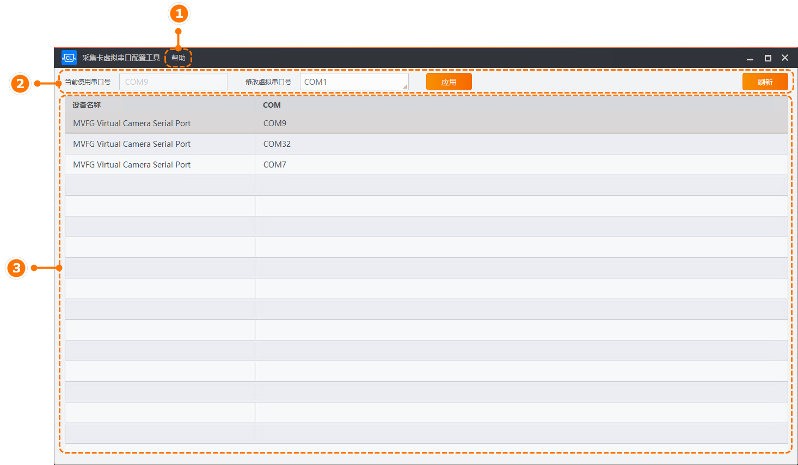

采集卡虚拟串口配置工具（本手册简称为“工具”）可自定义采集卡使用的串口，目前仅支持对自研Camera Link采集卡进行串口配置操作。
工具主界面如下图所示，相关说明请见下表。

图 1 串口配置工具|
序号 |
区域 |
说明 |
|---|---|---|
|
1 |
菜单栏 |
菜单栏可提供帮助操作，可对工具的语言（中英文）进行选择，并查看该用户手册和工具版本信息。 |
|
2 |
串口配置 |
可对设备当前使用的串口号进行显示和配置。 |
|
3 |
设备信息 |
显示已连接的设备及其对应COM口。 |
打开工具后，工具界面下方显示已连接的设备和对应的COM口，可单击工具右上角的刷新进行更新。
选择需要修改的采集卡设备，工具上方显示该设备当前使用的串口号。
单击修改虚拟串口号右下角的，下拉选择需要修改成的串口号后，单击应用即可。